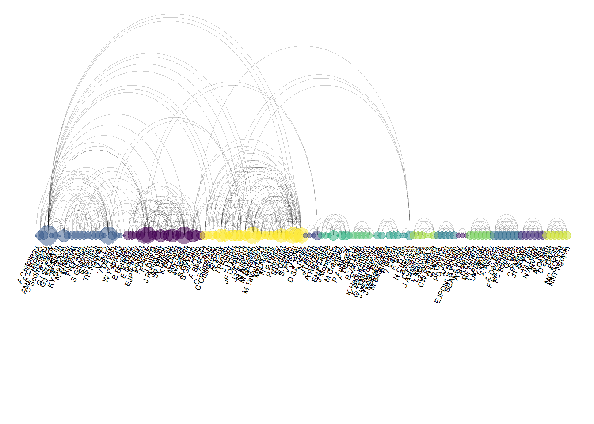
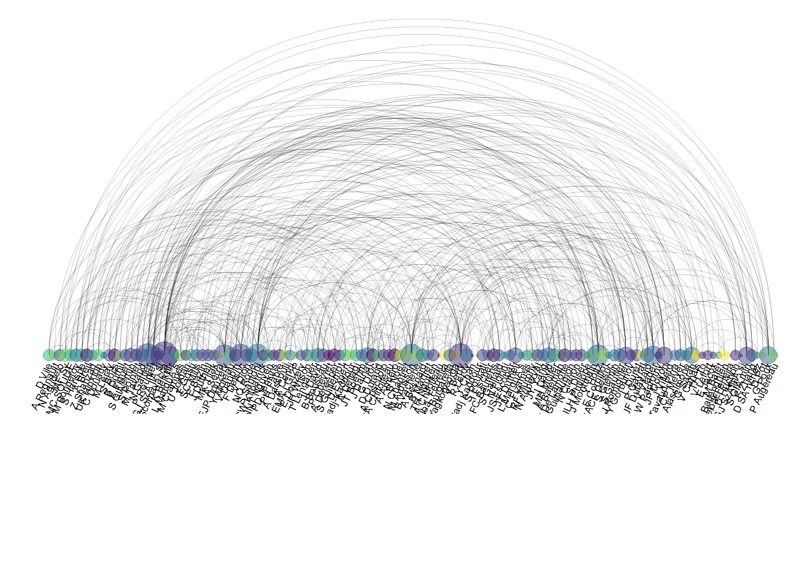
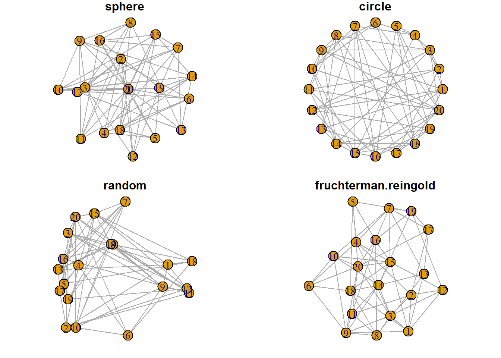

Chapter 8 Flow

Figure 8.1: Network Graph Layout
8.1 Arc Diagram
8.1.0.1 Definition
An arc diagram is a special kind of network graph. It is constituted by nodes that represent entities and by links that show relationships between entities. In arc diagrams, nodes are displayed along a single axis and links are represented with arcs.
Here is a simple example. Five links between 6 nodes are represented using a 2d network diagram (left) and an arc diagram (right)
# Libraries
library(tidyverse)
library(viridis)
library(patchwork)
library(hrbrthemes)
library(igraph)
library(ggraph)
library(colormap)
# A really simple edge list
links=data.frame(
source=c("A", "A", "A", "A", "B"),
target=c("B", "C", "D", "F","E")
)
# Transform to a igraph object
mygraph <- graph_from_data_frame(links)
# Make the usual network diagram
p1 <- ggraph(mygraph) +
geom_edge_link(edge_colour="black", edge_alpha=0.3, edge_width=0.2) +
geom_node_point( color="#69b3a2", size=5) +
geom_node_text( aes(label=name), repel = TRUE, size=8, color="#69b3a2") +
theme_void() +
theme(
legend.position="none",
plot.margin=unit(rep(2,4), "cm")
)
# Make a cord diagram
p2 <- ggraph(mygraph, layout="linear") +
geom_edge_arc(edge_colour="black", edge_alpha=0.3, edge_width=0.2) +
geom_node_point( color="#69b3a2", size=5) +
geom_node_text( aes(label=name), repel = FALSE, size=8, color="#69b3a2", nudge_y=-0.1) +
theme_void() +
theme(
legend.position="none",
plot.margin=unit(rep(2,4), "cm")
)
p1 + p28.1.1 Arc Diagrams
Are not as good as 2d network charts to convey the overall node structure. It has 2 main advantages tough:
- It can highlight clusters and bridges quite well if the node order is optimized.
- It allows to display the label of each node, which is often impossible in 2d structure.
Here is an example showing the co-authorship network of a researcher. Vincent Ranwez is author of several scientific publications and counts more than 100 co-authors, all represented by a node on the following chart. If two people have already been on the same paper, they are linked by an arc.
# Load data
dataUU <- read.table("https://raw.githubusercontent.com/holtzy/data_to_viz/master/Example_dataset/13_AdjacencyUndirectedUnweighted.csv", header=TRUE)
# Transform the adjacency matrix in a long format
connect <- dataUU %>%
gather(key="to", value="value", -1) %>%
mutate(to = gsub("\\.", " ",to)) %>%
na.omit()
# Number of connection per person
c( as.character(connect$from), as.character(connect$to)) %>%
as.tibble() %>%
group_by(value) %>%
summarize(n=n()) -> coauth
colnames(coauth) <- c("name", "n")
#dim(coauth)
# Create a graph object with igraph
mygraph <- graph_from_data_frame( connect, vertices = coauth, directed = FALSE )
# Find community
com <- walktrap.community(mygraph)
#max(com$membership)
#Reorder dataset and make the graph
coauth <- coauth %>%
mutate( grp = com$membership) %>%
arrange(grp) %>%
mutate(name=factor(name, name))
# keep only 10 first communities
coauth <- coauth %>%
filter(grp<16)
# keep only this people in edges
connect <- connect %>%
filter(from %in% coauth$name) %>%
filter(to %in% coauth$name)
# Create a graph object with igraph
mygraph <- graph_from_data_frame( connect, vertices = coauth, directed = FALSE )
# prepare a vector of n color in the viridis scale
mycolor <- colormap(colormap=colormaps$viridis, nshades=max(coauth$grp))
mycolor <- sample(mycolor, length(mycolor))
# Make the graph
ggraph(mygraph, layout="linear") +
geom_edge_arc(edge_colour="black", edge_alpha=0.2, edge_width=0.3, fold=TRUE) +
geom_node_point(aes(size=n, color=as.factor(grp), fill=grp), alpha=0.5) +
scale_size_continuous(range=c(0.5,8)) +
scale_color_manual(values=mycolor) +
geom_node_text(aes(label=name), angle=65, hjust=1, nudge_y = -1.1, size=2.3) +
theme_void() +
theme(
legend.position="none",
plot.margin=unit(c(0,0,0.4,0), "null"),
panel.spacing=unit(c(0,0,3.4,0), "null")
) +
expand_limits(x = c(-1.2, 1.2), y = c(-5.6, 1.2)) 
8.1.2 Common Mistakes
The order of nodes is the key for arc diagrams. See the following figure showing the same arc diagram than above, but with nodes displayed in a random order. Harder to find any insight isnt it?
#Reorder dataset randomly
coauth <- coauth %>%
slice( sample(c(1:nrow(coauth)), nrow(coauth)))
# Create a graph object with igraph
mygraph <- graph_from_data_frame( connect, vertices = coauth, directed = FALSE )
# prepare a vector of n color in the viridis scale
mycolor <- colormap(colormap=colormaps$viridis, nshades=max(coauth$grp))
mycolor <- sample(mycolor, length(mycolor))
# Make the graph
ggraph(mygraph, layout="linear") +
geom_edge_arc(edge_colour="black", edge_alpha=0.2, edge_width=0.3, fold=TRUE) +
geom_node_point(aes(size=n, color=as.factor(grp), fill=grp), alpha=0.5) +
scale_size_continuous(range=c(0.5,8)) +
scale_color_manual(values=mycolor) +
geom_node_text(aes(label=name), angle=65, hjust=1, nudge_y = -1.1, size=2.3) +
theme_void() +
theme(
legend.position="none",
plot.margin=unit(c(0,0,0.4,0), "null"),
panel.spacing=unit(c(0,0,3.4,0), "null")
) +
expand_limits(x = c(-1.2, 1.2), y = c(-5.6, 1.2)) 
8.2 Chord Diagram
A Chord diagram allows to study flows between a set of entities. Entities (nodes) are displayed all around a circle and connected with arcs (links). In R, the circlize package is the best option to build it.
The circlize package allows to build all kinds of circular chart. This first section introduces the way it works, step by step. Chord diagram are described in the following section, but a basic understanding of the library is necessary at first.
8.2.1 Introduction to the circlize Package
This section is an introduction to the circlize package: the ultimate way to build circular charts with R. It shows how to initialize a circular section and fill it with a scatterplot.
In R, circular plots are made using the circlize package. Circular plots are composed by several regions (8 here), each representing a level of a factor. Three steps are required to build a circular plot:
Step 1: Initialize the chart with
circos.initialize(). Provide the factor vector, and the numeric values to use for the X axis. The circle will be split in as many zone as the number of levels present in your factor. Each region will be as long as the coresponding x axis.Step 2: Build the regions with
circos.trackPlotRegion(). You have to specify the factors once again, and tell what to use for the Y axis if needed.Step 3: Add a chart in each region. Here
circos.trackPoints()is used to build a scatterplot. See chart #226 for other chart types.
# Upload library
library(circlize)
# Create data
data = data.frame(
factor = sample(letters[1:8], 1000, replace = TRUE),
x = rnorm(1000),
y = runif(1000)
)
# Step1: Initialise the chart giving factor and x-axis.
circos.initialize( factors=data$factor, x=data$x )
# Step 2: Build the regions.
circos.trackPlotRegion(factors = data$factor, y = data$y, panel.fun = function(x, y) {
circos.axis()
})
# Step 3: Add points
circos.trackPoints(data$factor, data$x, data$y, col = "blue", pch = 16, cex = 0.5) 8.2.2 Circular Chart Customization for the Circlize R package
This post follows the previous introduction to the circlize package. It shows how to apply basic customizations to a circular chart: how to change track width, background color, start angle and more.
8.2.3 Most Basic Circular Chart
Lets remind how to build a basic circular chart with the circlize package.
This is extensively described in chart #224.
# Upload library
library(circlize)
# Create data
data = data.frame(
factor = sample(letters[1:8], 1000, replace = TRUE),
x = rnorm(1000),
y = runif(1000)
)
# Step1: Initialise the chart giving factor and x-axis.
circos.initialize( factors=data$factor, x=data$x )
# Step 2: Build the regions.
circos.trackPlotRegion(factors = data$factor, y = data$y, panel.fun = function(x, y) {
circos.axis()
})
# Step 3: Add points
circos.trackPoints(data$factor, data$x, data$y)
8.2.4 Customization
Customization can happen at 3 different levels:
- Initialization: use the usual
par()and the specificcircos.par()functions for general stuff. - In
circos.axis()to customize axis. - In
circos.trackPoints()to customize the chart shapes.
Note that most of the parameters are consistent with base R. Have a look to the scatterplot section of the gallery for more customization.
# Upload library
library(circlize)
# Create data
data = data.frame(
factor = sample(letters[1:8], 1000, replace = TRUE),
x = rnorm(1000),
y = runif(1000)
)
# General Customization:
par(
mar = c(1, 1, 1, 1), # Margin around chart
bg = rgb(0.4,0.1,0.7,0.05) # background color
)
circos.par("track.height" = 0.6) # track hight, 0.6 = 60% of total height
# Step1: Initialise the chart giving factor and x-axis.
circos.initialize( factors=data$factor, x=data$x )
# Step2: Build regions.
circos.trackPlotRegion(factors = data$factor, y = data$y, panel.fun = function(x, y) {
circos.axis(
h="top", # x axis on the inner or outer part of the track?
labels=TRUE, # show the labels of the axis?
major.tick=TRUE, # show ticks?
labels.cex=0.5, # labels size (higher=bigger)
labels.font=1, # labels font (1, 2, 3 , 4)
direction="outside", # ticks point to the outside or inside of the circle ?
minor.ticks=4, # Number of minor (=small) ticks
major.tick.percentage=0.1, # The size of the ticks in percentage of the track height
lwd=2 # thickness of ticks and x axis.
)
})
# Step 3: Add points
circos.trackPoints(data$factor, data$x, data$y, col = "#69b3a2", pch = 16, cex = 0.5)
8.2.5 Available Circular Chart Types with Circlize
The circlize package allows to build circular charts with R. Several chart types are offered: bar, scatter, line, abline and more. This section shows how to build them.
8.2.5.1 Circular Scatterplot
Circular scatterplot has already been extensively described in chart #224 and #225.
# Upload library
library(circlize)
circos.par("track.height" = 0.4)
# Create data
data = data.frame(
factor = sample(letters[1:8], 1000, replace = TRUE),
x = rnorm(1000),
y = runif(1000)
)
# Step1: Initialise the chart giving factor and x-axis.
circos.initialize( factors=data$factor, x=data$x )
# Step 2: Build the regions.
circos.trackPlotRegion(factors = data$factor, y = data$y, panel.fun = function(x, y) {
circos.axis()
})
# Step 3: Add points
circos.trackPoints(data$factor, data$x, data$y, col="#69b3a2")
8.2.6 Circular Line Chart
It is possible to switch to line chart using the circos.trackLines() function. Visit the line chart section of the gallery to learn how to customize that kind of chart.
# Upload library
library(circlize)
circos.par("track.height" = 0.4)
# Create data
data = data.frame(
factor = sample(letters[1:8], 1000, replace = TRUE),
x = rnorm(1000),
y = runif(1000)
)
# Step1: Initialise the chart giving factor and x-axis.
circos.initialize( factors=data$factor, x=data$x )
# Step 2: Build the regions.
circos.trackPlotRegion(factors = data$factor, y = data$y, panel.fun = function(x, y) {
circos.axis()
})
# Step 3: Add points
circos.trackLines(data$factor, data$x[order(data$x)], data$y[order(data$x)], col = rgb(0.1,0.5,0.8,0.3), lwd=2)
8.2.7 Vertical Ablines
The circos.trackLines() function can also be used to display vertical ablines.
# Upload library
library(circlize)
circos.par("track.height" = 0.4)
# Create data
data = data.frame(
factor = sample(letters[1:8], 1000, replace = TRUE),
x = rnorm(1000),
y = runif(1000)
)
# Step1: Initialise the chart giving factor and x-axis.
circos.initialize( factors=data$factor, x=data$x )
# Step 2: Build the regions.
circos.trackPlotRegion(factors = data$factor, y = data$y, panel.fun = function(x, y) {
circos.axis()
})
# Step 3: Add points
circos.trackLines(data$factor, data$x[order(data$x)], data$y[order(data$x)], col = rgb(0.1,0.5,0.8,0.3), lwd=2, type="h")
8.2.8 Circular Histogram
Note that each plot type must be coherent with what you specified in the circos.trackPlotRegion function.
You have to specify an Y axis for a scatterplot as seen before. But not for a histogram that is built with circos.trackHist().
# Upload library
library(circlize)
circos.par("track.height" = 0.4)
# Create data
data = data.frame(
factor = sample(letters[1:8], 1000, replace = TRUE),
x = rnorm(1000),
y = runif(1000)
)
# Step1: Initialise the chart giving factor and x-axis.
circos.initialize( factors=data$factor, x=data$x )
circos.trackHist(data$factor, data$x, bg.col = "white", col = "#69b3a2")
8.2.9 Circular Chart with Several Tracks
The circlize package allows to build circular charts with several tracks. This section describes how, providing explanation and reproducible code. If you read the graph #224, and #225 you know how to make circular plots and customize them.
If you read the graph #224, and #225 you know how to make circular plots and customize them.
It is possible to add several tracks on your circular plot: just repeat the step 2 (building regions with circos.trackPlotRegion) and 3 (adding dots with circos.trackPoints for instance).
Note that you can custom the width of each track using track.height.
#library
library(circlize)
circos.clear()
#Create data
data = data.frame(
factor = sample(letters[1:8], 1000, replace = TRUE),
x = rnorm(1000),
y = runif(1000)
)
#Initialize the plot.
par(mar = c(1, 1, 1, 1) )
circos.initialize(factors = data$factor, x = data$x )
# Build the regions of track #1
circos.trackPlotRegion(factors = data$factor, y=data$y, panel.fun = function(x, y) {
circos.axis(labels.cex=0.5, labels.font=1, lwd=0.8)
})
# --> Add a scatterplot on it:
circos.trackPoints(data$factor, data$x, data$y, col = rgb(0.1,0.5,0.8,0.3), pch=20)
# Build the regions of track #2:
circlize::circos.trackPlotRegion(factors = data$factor, y=data$y, panel.fun = function(x, y) {
circos.axis(labels=FALSE, major.tick=FALSE)
})
# --> Add a scatterplot on it
circos.trackPoints(data$factor, data$x, data$y, col = rgb(0.9,0.5,0.8,0.3), pch=20, cex=2)
# Add track #3 --> don't forget you can custom the height of tracks!
circos.par("track.height" = 0.4)
circos.trackPlotRegion(factors = data$factor, y=data$y, panel.fun = function(x, y) {
circos.axis(labels=FALSE, major.tick=FALSE)
})
circos.trackLines(data$factor, data$x, data$y, col = rgb(0.9,0.5,0.1,0.3), pch=20, cex=2, type="h")
# and continue as long as needed!
8.2.10 Display Several Chord Diagrams on same Figure
Here is a trick to display several chord diagrams on the same figure, using R and the circlize package.
To arrange several circular charts in the same layout, simply use the layout() function as shown below.
This example comes from the circlize package vignette.
# library
library(circlize)
# Arrange the layout
layout(matrix(1:9, 3, 3))
# A loop to create 9 circular plots
for(i in 1:9) {
par(mar = c(0.5, 0.5, 0.5, 0.5), bg=rgb(1,1,1,0.1) )
factors = 1:8
circos.par(cell.padding = c(0, 0, 0, 0))
circos.initialize(factors, xlim = c(0, 1))
circos.trackPlotRegion(ylim = c(0, 1), track.height = 0.05, bg.col = rand_color(8), bg.border = NA )
# add links
for(i in 1:20) {
se = sample(1:8, 2)
circos.link(se[1], runif(2), se[2], runif(2), col = rand_color(1, transparency = 0.4))
}
circos.clear()
}
8.2.11 Draw Part of the Circular Chart Only
The circlize package allows to display only a section of the circular chart, using the circos.par() function.
It is possible to draw only a part of a Circular plot. Use canvas.xlim and canvas.ylim to specify the zone you want to show, as in the script below.
# library
library(circlize)
# Create data
factors <- letters[1:4]
x1 <- runif(100)
y1 <- runif(100)
# general parameter of the plot.
# With canvas.xlim and canvas.ylim we kind of "zoom on a part of the plot:
par(mar = c(1, 2, 0.1, 0.1) )
circos.par("track.height" = 0.7, "canvas.xlim" = c(0, 1), "canvas.ylim" = c(0, 1), "gap.degree" = 0, "clock.wise" = FALSE)
# Make the usual plot, but with no border
circos.initialize(factors = factors, xlim = c(0, 1))
circos.trackPlotRegion(factors = factors, ylim = c(0, 1), bg.border = NA )
# Finally we plot only the firs sector, so let's change its border to "black" to see it
circos.updatePlotRegion(sector.index = "a", bg.border = "grey" , bg.lwd=0.2)
# Now we can add a plot in this section! You can repeat these steps to add several regions
circos.lines(x1, y1, pch = 16, cex = 0.5, type="h" , col="#69b3a2" , lwd=3)
# Add axis
circos.axis(h="bottom" , labels.cex=0.4, direction = "inside" )
#clear
circos.clear()
Chart #224, and #225 introduced the circlize package and its ability to build circular charts.
It is possible to add connections between tracks with circos.links().
See chart #122 for a customized version, and chart #123 for an automatized version.
# library
library(circlize)
# Create data
set.seed(123)
data = data.frame(
factor = sample(letters[1:8], 1000, replace = TRUE),
x = rnorm(1000),
y = runif(1000)
)
# Initialize the plot.
par(mar = c(1, 1, 1, 1) )
circos.initialize(factors = data$factor, x = data$x )
# Build the regions of track #1
circos.trackPlotRegion(factors = data$factor, y=data$y , bg.col = rgb(0.1,0.1,seq(0,1,0.1),0.4) , bg.border = NA)
# Add a link between a point and another
circos.link("a", 0, "b", 0, h = 0.4)
# Add a link between a point and a zone
circos.link("e", 0, "g", c(-1,1), col = "green", lwd = 2, lty = 2, border="black" )
# Add a link between a zone and another
circos.link("c", c(-0.5, 0.5), "d", c(-0.5,0.5), col = "red", border = "blue", h = 0.2)
8.2.12 Advanced Chord Diagram with R and Circlize
Chord diagram is an efficient way to display flows between entities. This section shows how to build it from an edge list or from an adjacency matrix, using the circlize package.
8.2.12.1 Chord Diagram from Adjacency Matrix
The chordDiagram() function of the circlize package makes it a breeze to build chord diagrams from adjacency matrix in R.
The adjacency matrix displays all origins in rows, and all destinations in columns. Each cell is filled with a numeric value specifying the flow strength.
Note: Visit the chord section of the gallery or the circlize vignette for more chord examples.
# Create an adjacency matrix:
# a list of connections between 20 origin nodes, and 5 destination nodes:
numbers <- sample(c(1:1000), 100, replace = T)
data <- matrix( numbers, ncol=5)
rownames(data) <- paste0("orig-", seq(1,20))
colnames(data) <- paste0("dest-", seq(1,5))
# Load the circlize library
library(circlize)
# Make the circular plot
chordDiagram(data, transparency = 0.5)
8.2.13 Chord Diagram from Edge List
Another common format to store flow information is the edge list. Basically, all connections are stored one by one in a 2 columns file, listing the origin and destination of each.
Since the chordDiagram() function expects an adjacency matrix as input, it is required to use the table() function for reformating, as described below:
# Create an edge list: a list of connections between 10 origin nodes, and 10 destination nodes:
origin <- paste0("orig ", sample(c(1:10), 20, replace = T))
destination <- paste0("dest ", sample(c(1:10), 20, replace = T))
data <- data.frame(origin, destination)
# Transform input data in a adjacency matrix
adjacencyData <- with(data, table(origin, destination))
# Charge the circlize library
library(circlize)
# Make the circular plot
chordDiagram(adjacencyData, transparency = 0.5)
The circlize package developed by Zuguang Gu is the best way to build chord diagram in R. The chord diagram section of the gallery provides a step by step introduction to it.
This example explains how to build a highly customized chord diagram, adding links manually thanks to the circos.link() function.
Note that the library also offers a chordDiagram() functions that builds everything automatically, but offers less customization. (See it here.)
Important: This example has been found on stackoverflow, made by Jazzuro.
### You need several libraries
library(circlize)
library(migest)
library(dplyr)
### Make data
m <- data.frame(order = 1:6,
country = c("Ausralia", "India", "China", "Japan", "Thailand", "Malaysia"),
V3 = c(1, 150000, 90000, 180000, 15000, 10000),
V4 = c(35000, 1, 10000, 12000, 25000, 8000),
V5 = c(10000, 7000, 1, 40000, 5000, 4000),
V6 = c(7000, 8000, 175000, 1, 11000, 18000),
V7 = c(70000, 30000, 22000, 120000, 1, 40000),
V8 = c(60000, 90000, 110000, 14000, 30000, 1),
r = c(255,255,255,153,51,51),
g = c(51, 153, 255, 255, 255, 255),
b = c(51, 51, 51, 51, 51, 153),
stringsAsFactors = FALSE)
df1 <- m[, c(1,2, 9:11)]
m <- m[,-(1:2)]/1e04
m <- as.matrix(m[,c(1:6)])
dimnames(m) <- list(orig = df1$country, dest = df1$country)
#Sort order of data.frame and matrix for plotting in circos
df1 <- arrange(df1, order)
df1$country <- factor(df1$country, levels = df1$country)
m <- m[levels(df1$country),levels(df1$country)]
### Define ranges of circos sectors and their colors (both of the sectors and the links)
df1$xmin <- 0
df1$xmax <- rowSums(m) + colSums(m)
n <- nrow(df1)
df1$rcol<-rgb(df1$r, df1$g, df1$b, max = 255)
df1$lcol<-rgb(df1$r, df1$g, df1$b, alpha=200, max = 255)
### Plot sectors (outer part)
par(mar=rep(0,4))
circos.clear()
### Basic circos graphic parameters
circos.par(cell.padding=c(0,0,0,0), track.margin=c(0,0.15), start.degree = 90, gap.degree =4)
### Sector details
circos.initialize(factors = df1$country, xlim = cbind(df1$xmin, df1$xmax))
### Plot sectors
circos.trackPlotRegion(ylim = c(0, 1), factors = df1$country, track.height=0.1,
#panel.fun for each sector
panel.fun = function(x, y) {
#select details of current sector
name = get.cell.meta.data("sector.index")
i = get.cell.meta.data("sector.numeric.index")
xlim = get.cell.meta.data("xlim")
ylim = get.cell.meta.data("ylim")
#text direction (dd) and adjusmtents (aa)
theta = circlize(mean(xlim), 1.3)[1, 1] %% 360
dd <- ifelse(theta < 90 || theta > 270, "clockwise", "reverse.clockwise")
aa = c(1, 0.5)
if(theta < 90 || theta > 270) aa = c(0, 0.5)
#plot country labels
circos.text(x=mean(xlim), y=1.7, labels=name, facing = dd, cex=0.6, adj = aa)
#plot main sector
circos.rect(xleft=xlim[1], ybottom=ylim[1], xright=xlim[2], ytop=ylim[2],
col = df1$rcol[i], border=df1$rcol[i])
#blank in part of main sector
circos.rect(xleft=xlim[1], ybottom=ylim[1], xright=xlim[2]-rowSums(m)[i], ytop=ylim[1]+0.3,
col = "white", border = "white")
#white line all the way around
circos.rect(xleft=xlim[1], ybottom=0.3, xright=xlim[2], ytop=0.32, col = "white", border = "white")
#plot axis
circos.axis(labels.cex=0.6, direction = "outside", major.at=seq(from=0,to=floor(df1$xmax)[i],by=5),
minor.ticks=1, labels.away.percentage = 0.15)
})
### Plot links (inner part)
### Add sum values to df1, marking the x-position of the first links
### out (sum1) and in (sum2). Updated for further links in loop below.
df1$sum1 <- colSums(m)
df1$sum2 <- numeric(n)
### Create a data.frame of the flow matrix sorted by flow size, to allow largest flow plotted first
df2 <- cbind(as.data.frame(m),orig=rownames(m), stringsAsFactors=FALSE)
df2 <- reshape(df2, idvar="orig", varying=list(1:n), direction="long",
timevar="dest", time=rownames(m), v.names = "m")
df2 <- arrange(df2,desc(m))
### Keep only the largest flows to avoid clutter
df2 <- subset(df2, m > quantile(m,0.6))
### Plot links
for(k in 1:nrow(df2)){
#i,j reference of flow matrix
i<-match(df2$orig[k],df1$country)
j<-match(df2$dest[k],df1$country)
#plot link
circos.link(sector.index1=df1$country[i], point1=c(df1$sum1[i], df1$sum1[i] + abs(m[i, j])),
sector.index2=df1$country[j], point2=c(df1$sum2[j], df1$sum2[j] + abs(m[i, j])),
col = df1$lcol[i])
#update sum1 and sum2 for use when plotting the next link
df1$sum1[i] = df1$sum1[i] + abs(m[i, j])
df1$sum2[j] = df1$sum2[j] + abs(m[i, j])
}
8.2.14 Chord Diagram
A chord diagram represents flows or connections between several entities (called nodes). Each entity is represented by a fragment on the outer part of the circular layout. Then, arcs are drawn between each entities. The size of the arc is proportional to the importance of the flow.
Here is an example displaying the number of people migrating from one country to another. Data used comes from this scientific publication from Gui J. Abel.
# Libraries
library(tidyverse)
library(viridis)
library(patchwork)
library(hrbrthemes)
library(circlize)
library(chorddiag) #devtools::install_github("mattflor/chorddiag")
# Load dataset from github
data <- read.table("https://raw.githubusercontent.com/holtzy/data_to_viz/master/Example_dataset/13_AdjacencyDirectedWeighted.csv", header=TRUE)
# short names
colnames(data) <- c("Africa", "East Asia", "Europe", "Latin Ame.", "North Ame.", "Oceania", "South Asia", "South East Asia", "Soviet Union", "West.Asia")
rownames(data) <- colnames(data)
# I need a long format
data_long <- data %>%
rownames_to_column %>%
gather(key = 'key', value = 'value', -rowname)
# parameters
circos.clear()
circos.par(start.degree = 90, gap.degree = 4, track.margin = c(-0.1, 0.1), points.overflow.warning = FALSE)
par(mar = rep(0, 4))
# color palette
mycolor <- viridis(10, alpha = 1, begin = 0, end = 1, option = "D")
mycolor <- mycolor[sample(1:10)]
# Base plot
chordDiagram(
x = data_long,
grid.col = mycolor,
transparency = 0.25,
directional = 1,
direction.type = c("arrows", "diffHeight"),
diffHeight = -0.04,
annotationTrack = "grid",
annotationTrackHeight = c(0.05, 0.1),
link.arr.type = "big.arrow",
link.sort = TRUE,
link.largest.ontop = TRUE)
# Add text and axis
circos.trackPlotRegion(
track.index = 1,
bg.border = NA,
panel.fun = function(x, y) {
xlim = get.cell.meta.data("xlim")
sector.index = get.cell.meta.data("sector.index")
# Add names to the sector.
circos.text(
x = mean(xlim),
y = 3.2,
labels = sector.index,
facing = "bending",
cex = 0.8
)
# Add graduation on axis
circos.axis(
h = "top",
major.at = seq(from = 0, to = xlim[2], by = ifelse(test = xlim[2]>10, yes = 2, no = 1)),
minor.ticks = 1,
major.tick.percentage = 0.5,
labels.niceFacing = FALSE)
}
)
8.2.15 Variations
Interactivity is a real plus to make the chord diagram understandable. In the example below, you can hover a specific group to highlight all its connections.
library(chorddiag)
m <- matrix(c(11975, 5871, 8916, 2868,
1951, 10048, 2060, 6171,
8010, 16145, 8090, 8045,
1013, 990, 940, 6907),
byrow = TRUE,
nrow = 4, ncol = 4)
haircolors <- c("black", "blonde", "brown", "red")
dimnames(m) <- list(have = haircolors,
prefer = haircolors)
groupColors <- c("#000000", "#FFDD89", "#957244", "#F26223")
chorddiag(m, groupColors = groupColors, groupnamePadding = 20)8.2.16 Static Chord Diagram
The circlize package also offers functions to build chord diagrams. Basically, it allows to add arcs between nodes to show flows. The examples below will guide you through their usage. The circos.links() function builds connection one by one, when chordDiagram() plot a whole dataset in one shot.
8.2.17 Introduction to Chord Diagram
The circlize package allows to build chord diagrams, where arcs between sections are built to show flows.
Chart #224, and #225 introduced the circlize package and its ability to build circular charts.
It is possible to add connections between tracks with circos.links().
See chart #122 for a customized version, and chart #123 for an automatized version.
# library
library(circlize)
# Create data
set.seed(123)
data = data.frame(
factor = sample(letters[1:8], 1000, replace = TRUE),
x = rnorm(1000),
y = runif(1000)
)
# Initialize the plot.
par(mar = c(1, 1, 1, 1) )
circos.initialize(factors = data$factor, x = data$x )
# Build the regions of track #1
circos.trackPlotRegion(factors = data$factor, y=data$y , bg.col = rgb(0.1,0.1,seq(0,1,0.1),0.4) , bg.border = NA)
# Add a link between a point and another
circos.link("a", 0, "b", 0, h = 0.4)
# Add a link between a point and a zone
circos.link("e", 0, "g", c(-1,1), col = "green", lwd = 2, lty = 2, border="black" )
# Add a link between a zone and another
circos.link("c", c(-0.5, 0.5), "d", c(-0.5,0.5), col = "red", border = "blue", h = 0.2)8.2.18 Chord Diagram from Adjacency Matrix
The circlize package developped by Zuguang Gu is the best way to build chord diagram in R. The chord diagram section of the gallery provides a step by step introduction to it.
This example explains how to build a highly customized chord diagram, adding links manually thanks to the circos.link() function.
Note that the library also offers a chordDiagram() functions that builds everything automatically, but offers less customization. (See it here.)
Important: This example has been found on stackoverflow, made by Jazzuro.
### You need several libraries
library(circlize)
library(migest)
library(dplyr)
### Make data
m <- data.frame(order = 1:6,
country = c("Ausralia", "India", "China", "Japan", "Thailand", "Malaysia"),
V3 = c(1, 150000, 90000, 180000, 15000, 10000),
V4 = c(35000, 1, 10000, 12000, 25000, 8000),
V5 = c(10000, 7000, 1, 40000, 5000, 4000),
V6 = c(7000, 8000, 175000, 1, 11000, 18000),
V7 = c(70000, 30000, 22000, 120000, 1, 40000),
V8 = c(60000, 90000, 110000, 14000, 30000, 1),
r = c(255,255,255,153,51,51),
g = c(51, 153, 255, 255, 255, 255),
b = c(51, 51, 51, 51, 51, 153),
stringsAsFactors = FALSE)
df1 <- m[, c(1,2, 9:11)]
m <- m[,-(1:2)]/1e04
m <- as.matrix(m[,c(1:6)])
dimnames(m) <- list(orig = df1$country, dest = df1$country)
#Sort order of data.frame and matrix for plotting in circos
df1 <- arrange(df1, order)
df1$country <- factor(df1$country, levels = df1$country)
m <- m[levels(df1$country),levels(df1$country)]
### Define ranges of circos sectors and their colors (both of the sectors and the links)
df1$xmin <- 0
df1$xmax <- rowSums(m) + colSums(m)
n <- nrow(df1)
df1$rcol<-rgb(df1$r, df1$g, df1$b, max = 255)
df1$lcol<-rgb(df1$r, df1$g, df1$b, alpha=200, max = 255)
### Plot sectors (outer part)
par(mar=rep(0,4))
circos.clear()
### Basic circos graphic parameters
circos.par(cell.padding=c(0,0,0,0), track.margin=c(0,0.15), start.degree = 90, gap.degree =4)
### Sector details
circos.initialize(factors = df1$country, xlim = cbind(df1$xmin, df1$xmax))
### Plot sectors
circos.trackPlotRegion(ylim = c(0, 1), factors = df1$country, track.height=0.1,
#panel.fun for each sector
panel.fun = function(x, y) {
#select details of current sector
name = get.cell.meta.data("sector.index")
i = get.cell.meta.data("sector.numeric.index")
xlim = get.cell.meta.data("xlim")
ylim = get.cell.meta.data("ylim")
#text direction (dd) and adjusmtents (aa)
theta = circlize(mean(xlim), 1.3)[1, 1] %% 360
dd <- ifelse(theta < 90 || theta > 270, "clockwise", "reverse.clockwise")
aa = c(1, 0.5)
if(theta < 90 || theta > 270) aa = c(0, 0.5)
#plot country labels
circos.text(x=mean(xlim), y=1.7, labels=name, facing = dd, cex=0.6, adj = aa)
#plot main sector
circos.rect(xleft=xlim[1], ybottom=ylim[1], xright=xlim[2], ytop=ylim[2],
col = df1$rcol[i], border=df1$rcol[i])
#blank in part of main sector
circos.rect(xleft=xlim[1], ybottom=ylim[1], xright=xlim[2]-rowSums(m)[i], ytop=ylim[1]+0.3,
col = "white", border = "white")
#white line all the way around
circos.rect(xleft=xlim[1], ybottom=0.3, xright=xlim[2], ytop=0.32, col = "white", border = "white")
#plot axis
circos.axis(labels.cex=0.6, direction = "outside", major.at=seq(from=0,to=floor(df1$xmax)[i],by=5),
minor.ticks=1, labels.away.percentage = 0.15)
})
### Plot links (inner part)
### Add sum values to df1, marking the x-position of the first links
### out (sum1) and in (sum2). Updated for further links in loop below.
df1$sum1 <- colSums(m)
df1$sum2 <- numeric(n)
### Create a data.frame of the flow matrix sorted by flow size, to allow largest flow plotted first
df2 <- cbind(as.data.frame(m),orig=rownames(m), stringsAsFactors=FALSE)
df2 <- reshape(df2, idvar="orig", varying=list(1:n), direction="long",
timevar="dest", time=rownames(m), v.names = "m")
df2 <- arrange(df2,desc(m))
### Keep only the largest flows to avoid clutter
df2 <- subset(df2, m > quantile(m,0.6))
### Plot links
for(k in 1:nrow(df2)){
#i,j reference of flow matrix
i<-match(df2$orig[k],df1$country)
j<-match(df2$dest[k],df1$country)
#plot link
circos.link(sector.index1=df1$country[i], point1=c(df1$sum1[i], df1$sum1[i] + abs(m[i, j])),
sector.index2=df1$country[j], point2=c(df1$sum2[j], df1$sum2[j] + abs(m[i, j])),
col = df1$lcol[i])
#update sum1 and sum2 for use when plotting the next link
df1$sum1[i] = df1$sum1[i] + abs(m[i, j])
df1$sum2[j] = df1$sum2[j] + abs(m[i, j])
}8.3 Edge Bundling
8.3.1 Hierarchical Edge Bundling
Hierarchical edge bundling allows to visualize adjacency relations between entities organized in a hierarchy. The idea is to bundle the adjacency edges together to decrease the clutter usually observed in complex networks. The ggraph package is the best tool to build this kind of chart in R.
8.3.1.1 What is Hierarchical Edge Bundling?
The following post will guide you through the basics of hierarchical edge bundling. It explains what this kind of chart really is, describing step by step how to build it in R with the graph package.
8.3.2 Introduction to Hierarchical Edge Bundling with R
This section defines what hierarchical edge bundling is. It provides a basic implementation using R and the ggraph library. For an in depth explanation, visit data-to-viz.com.
8.3.2.1 Input Data
Hierarchical Edge Bundling is a data visualisation method allowing to check connections between leaves of a hierarchical network. It requires two inputs:
- A hierarchical network structure, also called tree.
- An adjacency matrix that describes connections between some nodes of the tree.
Hierarchical network data frame:

Connections data frame:

8.3.2.2 Visualizing the Hierarchy
Lets start by creating the hierarchic structure with R. A hierarchic structure is basically a set of nodes, with edges linking nodes. We often accompany it with a second data frame that gives features for each node of the first data frame.
Lets build these 2 tables:
# Libraries
library(ggraph)
library(igraph)
# create a data frame giving the hierarchical structure of your individuals.
# Origin on top, then groups, then subgroups
d1 <- data.frame(from="origin", to=paste("group", seq(1,10), sep=""))
d2 <- data.frame(from=rep(d1$to, each=10), to=paste("subgroup", seq(1,100), sep="_"))
hierarchy <- rbind(d1, d2)
# create a vertices data.frame. One line per object of our hierarchy, giving features of nodes.
vertices <- data.frame(name = unique(c(as.character(hierarchy$from), as.character(hierarchy$to))) ) A hierarchical structure is a network structure. Thus, we can visualise it with the igraph or the ggraph library quite easily, like described in the network section of the gallery.
# Create a graph object with the igraph library
mygraph <- graph_from_data_frame( hierarchy, vertices=vertices )
# This is a network object, you visualize it as a network like shown in the network section!
# With igraph:
plot(mygraph, vertex.label="", edge.arrow.size=0, vertex.size=2)# With ggraph:
ggraph(mygraph, layout = 'dendrogram', circular = FALSE) +
geom_edge_link() +
theme_void()
ggraph(mygraph, layout = 'dendrogram', circular = TRUE) +
geom_edge_diagonal() +
theme_void()8.3.3 Add a Few Connections
Now, lets add a second input to our data: connections. Suppose that nodes 18, 20 and 30 are connected to nodes 19, 50 and 70 respectively.
An obvious solution to represent this link could be to add a straight line (left). The hierarchical edge bundling method does almost that. But it curves the lines to make thelm follow the edges of our structure (right).
This method offers a tension parameters which controls how much we want to curve the lines.
# left: What happens if connections are represented with straight lines
ggraph(mygraph, layout = 'dendrogram', circular = TRUE) +
geom_edge_diagonal(alpha=0.1) +
geom_conn_bundle(data = get_con(from = c(18,20,30), to = c(19, 50, 70)), alpha=1, width=1, colour="skyblue", tension = 0) +
theme_void()# right: using the bundle method (tension = 1)
ggraph(mygraph, layout = 'dendrogram', circular = TRUE) +
geom_edge_diagonal(alpha=0.1) +
geom_conn_bundle(data = get_con(from = c(18,20,30), to = c(19, 50, 70)), alpha=1, width=1, colour="skyblue", tension = 1) +
theme_void()8.3.4 Hierarchical Edge Bundling
Usually connections are stored in another data frame, here called connect. We have to pass it to ggraph to automatically plot all the connections. You get a hierarchical edge bundling chart.
Note: ggraph expect nodes to be called following their id. Thus, it is necessary to get them using the match() function.
# create a dataframe with connection between leaves (individuals)
all_leaves <- paste("subgroup", seq(1,100), sep="_")
connect <- rbind(
data.frame( from=sample(all_leaves, 100, replace=T) , to=sample(all_leaves, 100, replace=T)),
data.frame( from=sample(head(all_leaves), 30, replace=T) , to=sample( tail(all_leaves), 30, replace=T)),
data.frame( from=sample(all_leaves[25:30], 30, replace=T) , to=sample( all_leaves[55:60], 30, replace=T)),
data.frame( from=sample(all_leaves[75:80], 30, replace=T) , to=sample( all_leaves[55:60], 30, replace=T))
)
# The connection object must refer to the ids of the leaves:
from <- match( connect$from, vertices$name)
to <- match( connect$to, vertices$name)# plot
ggraph(mygraph, layout = 'dendrogram', circular = TRUE) +
geom_conn_bundle(data = get_con(from = from, to = to), alpha=0.2, colour="skyblue", tension = 0) +
geom_node_point(aes(filter = leaf, x = x*1.05, y=y*1.05)) +
theme_void()
# plot
ggraph(mygraph, layout = 'dendrogram', circular = TRUE) +
geom_conn_bundle(data = get_con(from = from, to = to), alpha=0.2, colour="skyblue", tension = 0.9) +
geom_node_point(aes(filter = leaf, x = x*1.05, y=y*1.05)) +
theme_void()
8.3.5 Customize Hierarchical Edge Bundling
This section shows a few customization you can apply to a hierarchical edge bundling chart. It shows how to control the way connection are curved, how to manage connection colors and node features.
8.3.5.1 Basic Hierarchical Edge Bundling
This page follows the previous introduction to hierarchical edge bundling.
It considers you understood what inputs you need and how to build a basic version. It aims to describe how we can improve it, customizing tension, connection and node features.
First, lets remember the R code allowing to get this very basic hierarchical edge bundling:
# Libraries
library(ggraph)
library(igraph)
library(tidyverse)
# create a data frame giving the hierarchical structure of your individuals
set.seed(1234)
d1 <- data.frame(from="origin", to=paste("group", seq(1,10), sep=""))
d2 <- data.frame(from=rep(d1$to, each=10), to=paste("subgroup", seq(1,100), sep="_"))
hierarchy <- rbind(d1, d2)
# create a dataframe with connection between leaves (individuals)
all_leaves <- paste("subgroup", seq(1,100), sep="_")
connect <- rbind(
data.frame( from=sample(all_leaves, 100, replace=T) , to=sample(all_leaves, 100, replace=T)),
data.frame( from=sample(head(all_leaves), 30, replace=T) , to=sample( tail(all_leaves), 30, replace=T)),
data.frame( from=sample(all_leaves[25:30], 30, replace=T) , to=sample( all_leaves[55:60], 30, replace=T)),
data.frame( from=sample(all_leaves[75:80], 30, replace=T) , to=sample( all_leaves[55:60], 30, replace=T)) )
connect$value <- runif(nrow(connect))
# create a vertices data.frame. One line per object of our hierarchy
vertices <- data.frame(
name = unique(c(as.character(hierarchy$from), as.character(hierarchy$to))) ,
value = runif(111)
)
# Let's add a column with the group of each name. It will be useful later to color points
vertices$group <- hierarchy$from[ match( vertices$name, hierarchy$to ) ]
# Create a graph object
mygraph <- graph_from_data_frame( hierarchy, vertices=vertices )
# The connection object must refer to the ids of the leaves:
from <- match( connect$from, vertices$name)
to <- match( connect$to, vertices$name)
# Basic graph
ggraph(mygraph, layout = 'dendrogram', circular = TRUE) +
geom_conn_bundle(data = get_con(from = from, to = to), alpha=0.2, colour="skyblue", tension = .5) +
geom_node_point(aes(filter = leaf, x = x*1.05, y=y*1.05)) +
theme_void()
8.3.6 Playing with tension
The first thing we can play with is the tension of the connections. A tension of 0 means straight lines. A connection of 1 means maximal curvature: the connections follow the hierarchical structure of the network as much as they can.
Lets have a look to the effect of different values.
p <- ggraph(mygraph, layout = 'dendrogram', circular = TRUE) +
geom_node_point(aes(filter = leaf, x = x*1.05, y=y*1.05)) +
theme_void()
# 0.1
p + geom_conn_bundle(data = get_con(from = from, to = to), alpha=0.2, colour="skyblue", width=0.9,
tension=0.1) 
# 0.7
p + geom_conn_bundle(data = get_con(from = from, to = to), alpha=0.2, colour="skyblue", width=0.9,
tension=0.7) 
#1
p + geom_conn_bundle(data = get_con(from = from, to = to), alpha=0.2, colour="skyblue", width=0.9,
tension=1) 
8.3.7 Connection Features
Then we can play with the colour and transparency of connections. We have seen how to pick up a unique color in the example above. We can also map a specific variable to it like we are used to do with ggplot2 (chart 1 and 2 below)! Another possibility is to make the color evolves along the trajectory: the from and the to have different color. This is useful if your connection is directed, and gives the nice effect figure 4.
# Use the 'value' column of the connection data frame for the color:
p + geom_conn_bundle(data = get_con(from = from, to = to), aes(colour=value, alpha=value)) 
# In this case you can change the color palette
p +
geom_conn_bundle(data = get_con(from = from, to = to), aes(colour=value)) +
scale_edge_color_continuous(low="white", high="red")
p +
geom_conn_bundle(data = get_con(from = from, to = to), aes(colour=value)) +
scale_edge_colour_distiller(palette = "BuPu")
# Color depends of the index: the from and the to are different
p +
geom_conn_bundle(data = get_con(from = from, to = to), width=1, alpha=0.2, aes(colour=..index..)) +
scale_edge_colour_distiller(palette = "RdPu") +
theme(legend.position = "none")
8.3.8 Node Features
Finally we can custom the points as well, like for a classic ggplot2 graphic. It is a good practice to make the color depends of the classification of the point, it allows to make the hierarchy more obvious. In the last example, I map a column to the size of the points.
# Basic usual argument
p=ggraph(mygraph, layout = 'dendrogram', circular = TRUE) +
geom_conn_bundle(data = get_con(from = from, to = to), width=1, alpha=0.2, aes(colour=..index..)) +
scale_edge_colour_distiller(palette = "RdPu") +
theme_void() +
theme(legend.position = "none")# just a blue uniform color. Note that the x*1.05 allows to make a space between the points and the connection ends
p + geom_node_point(aes(filter = leaf, x = x*1.05, y=y*1.05), colour="skyblue", alpha=0.3, size=3)
# It is good to color the points following their group appartenance
library(RColorBrewer)
p + geom_node_point(aes(filter = leaf, x = x*1.05, y=y*1.05, colour=group), size=3) +
scale_colour_manual(values= rep( brewer.pal(9,"Paired") , 30))
# And you can adjust the size to whatever variable quite easily!
p +
geom_node_point(aes(filter = leaf, x = x*1.05, y=y*1.05, colour=group, size=value, alpha=0.2)) +
scale_colour_manual(values= rep( brewer.pal(9,"Paired") , 30)) +
scale_size_continuous( range = c(0.1,10) ) 
8.3.9 Without Labels
Previous section of the hierarchical edge bundling section explained:
- How to build a very basic version.
- How to customize connection and node features.
Lets remind how to prepare the data for the ggraph library.
# Libraries
library(ggraph)
library(igraph)
library(tidyverse)
library(RColorBrewer)
# create a data frame giving the hierarchical structure of your individuals
set.seed(1234)
d1 <- data.frame(from="origin", to=paste("group", seq(1,10), sep=""))
d2 <- data.frame(from=rep(d1$to, each=10), to=paste("subgroup", seq(1,100), sep="_"))
edges <- rbind(d1, d2)
# create a dataframe with connection between leaves (individuals)
all_leaves <- paste("subgroup", seq(1,100), sep="_")
connect <- rbind(
data.frame( from=sample(all_leaves, 100, replace=T) , to=sample(all_leaves, 100, replace=T)),
data.frame( from=sample(head(all_leaves), 30, replace=T) , to=sample( tail(all_leaves), 30, replace=T)),
data.frame( from=sample(all_leaves[25:30], 30, replace=T) , to=sample( all_leaves[55:60], 30, replace=T)),
data.frame( from=sample(all_leaves[75:80], 30, replace=T) , to=sample( all_leaves[55:60], 30, replace=T)) )
connect$value <- runif(nrow(connect))
# create a vertices data.frame. One line per object of our hierarchy
vertices <- data.frame(
name = unique(c(as.character(edges$from), as.character(edges$to))) ,
value = runif(111)
)
# Let's add a column with the group of each name. It will be useful later to color points
vertices$group <- edges$from[ match( vertices$name, edges$to ) ]8.3.10 Create the Labels
Next step: computing the label features that will be displayed all around the circle, next to the nodes:
- Angle: Vertical on top and button, horizontal on the side, and so on.
- Flip it: Labels on the left hand side must be flipped to be readable.
- Alignment: Ff labels are flipped, they must be right aligned.
Those information are computed and added to the vertices data frame.
#Let's add information concerning the label we are going to add: angle, horizontal adjustement and potential flip
#calculate the ANGLE of the labels
vertices$id <- NA
myleaves <- which(is.na( match(vertices$name, edges$from) ))
nleaves <- length(myleaves)
vertices$id[ myleaves ] <- seq(1:nleaves)
vertices$angle <- 90 - 360 * vertices$id / nleaves
# calculate the alignment of labels: right or left
# If I am on the left part of the plot, my labels have currently an angle < -90
vertices$hjust <- ifelse( vertices$angle < -90, 1, 0)
# flip angle BY to make them readable
vertices$angle <- ifelse(vertices$angle < -90, vertices$angle+180, vertices$angle)8.3.11 Plot the Labels
Now that label features have been computed, we just need to display it on the chart using the geom_node_text() function.
# Create a graph object
mygraph <- igraph::graph_from_data_frame( edges, vertices=vertices )
# The connection object must refer to the ids of the leaves:
from <- match( connect$from, vertices$name)
to <- match( connect$to, vertices$name)
# Basic usual argument
ggraph(mygraph, layout = 'dendrogram', circular = TRUE) +
geom_node_point(aes(filter = leaf, x = x*1.05, y=y*1.05)) +
geom_conn_bundle(data = get_con(from = from, to = to), alpha=0.2, colour="skyblue", width=0.9) +
geom_node_text(aes(x = x*1.1, y=y*1.1, filter = leaf, label=name, angle = angle, hjust=hjust), size=1.5, alpha=1) +
theme_void() +
theme(
legend.position="none",
plot.margin=unit(c(0,0,0,0),"cm"),
) +
expand_limits(x = c(-1.2, 1.2), y = c(-1.2, 1.2))
8.3.12 With Customization
To get the final figure, it is necessary to add customization described in graph #310:
- Control node size, color and transparency
- Control connection color
ggraph(mygraph, layout = 'dendrogram', circular = TRUE) +
geom_conn_bundle(data = get_con(from = from, to = to), alpha=0.2, width=0.9, aes(colour=..index..)) +
scale_edge_colour_distiller(palette = "RdPu") +
geom_node_text(aes(x = x*1.15, y=y*1.15, filter = leaf, label=name, angle = angle, hjust=hjust, colour=group), size=2, alpha=1) +
geom_node_point(aes(filter = leaf, x = x*1.07, y=y*1.07, colour=group, size=value, alpha=0.2)) +
scale_colour_manual(values= rep( brewer.pal(9,"Paired") , 30)) +
scale_size_continuous( range = c(0.1,10) ) +
theme_void() +
theme(
legend.position="none",
plot.margin=unit(c(0,0,0,0),"cm"),
) +
expand_limits(x = c(-1.3, 1.3), y = c(-1.3, 1.3))
8.4 Network Graph
Network diagrams (or Graphs) show interconnections between a set of entities. Each entity is represented by a Node (or vertice). Connections between nodes are represented by links (or edges). Three packages are of interest in R: igraph for data preparation and plotting, ggraph for plotting using the grammar of graphic, and networkD3 for interactivity. Datacamp offers a good online course on the topic.
8.4.0.1 Input Format and Introduction to igraph
Building a network diagram is always complicated since many different input formats are available:
Moreover, you need to know wheter the network youre trying to build is directed or undirected, and weighted or unweighted. In any case, the igraph package is the best tool to read that kind of data and transform it into a graph object that is required to make a chart.
8.4.1 Network Chart with R and igraph from any Type of Input
This section explains how to get started with the igraph package from any type of input. It shows how to build a network diagram from adjacency matrix, edge list, litteral list and more.
8.4.1.1 Adjacency Matrix
An adjacency matrix is a square matrix where individuals in rows and columns are the same.
Its typically the kind of matrix you get when calculating the correlation between each pair of individual. In this example, we have 1 connection from E to C, and 2 connections from C to E. By default, we get an unweighted and oriented network.

#library
library(igraph)
# Create data
set.seed(10)
data <- matrix(sample(0:2, 25, replace=TRUE), nrow=5)
colnames(data) = rownames(data) = LETTERS[1:5]
# build the graph object
network <- graph_from_adjacency_matrix(data)
# plot it
plot(network)
8.4.2 Incidence Matrix
An incidence matrix is not square and entities provided in rows and columns are not necessary the same.
Note: by default, the graph object is directed from rows to columns.

# lib
library(igraph)
# data
set.seed(1)
data <- matrix(sample(0:2, 15, replace=TRUE), nrow=3)
colnames(data) <- letters[1:5]
rownames(data) <- LETTERS[1:3]
# create the network object
network <- graph_from_incidence_matrix(data)
# plot it
plot(network)
8.4.3 Edge List
An edge list has 2 columns. Each row represents a connection between an origin (first column) and a destination (left column).
Note: this kind of input often goes with another dataframe providing features for each node. (See this post). It is also possible to add information concerning each link in the edge list.

# create data:
links <- data.frame(
source=c("A","A", "A", "A", "A","F", "B"),
target=c("B","B", "C", "D", "F","A","E")
)
# create the network object
network <- graph_from_data_frame(d=links, directed=F)
# plot it
plot(network)
8.4.4 Literal List of Connections
Last option that is less often used: a literal list of the connection. Can be understand by igraph thanks to the graph_from_literal() function.
# create data:
network <- graph_from_literal( A-B-C-D, E-A-E-A, D-C-A, D-A-D-C )
# plot it
plot(network)
8.4.5 Default Network Chart with igraph
This section assumes you already know how to build a basic network chart with the igraph library. If you dont have a look to the network section that provides an introduction.
Basically, igraph allows to transform several types of input into a graph object that can be plotted using the plot() function as follow:
# Library
library(igraph)
# Create data
set.seed(1)
data <- matrix(sample(0:1, 100, replace=TRUE, prob=c(0.8,0.2)), nc=10)
network <- graph_from_adjacency_matrix(data , mode='undirected', diag=F )
# Default network
par(mar=c(0,0,0,0))
plot(network)
8.4.6 Customize Node Features
Node can be modified buy several arguments that all start with vertex. A vertex is a node inigraph` language. Main options are explained in the code below:
plot(network,
vertex.color = rgb(0.8,0.2,0.2,0.9), # Node color
vertex.frame.color = "Forestgreen", # Node border color
vertex.shape=c("circle","square"), # One of 'none', 'circle', 'square', 'csquare', 'rectangle' 'crectangle', 'vrectangle', 'pie', 'raster', or 'sphere'
vertex.size=c(15:24), # Size of the node (default is 15)
vertex.size2=NA, # The second size of the node (e.g. for a rectangle)
)
8.4.7 Customize Label Features
Following the same principle, options starting with vertex.label. control the label features. Note that when several values are provided to an option, values are used subsequently and recycled.
plot(network,
vertex.label=LETTERS[1:10], # Character vector used to label the nodes
vertex.label.color=c("red","blue"),
vertex.label.family="Times", # Font family of the label (e.g.'Times', 'Helvetica')
vertex.label.font=c(1,2,3,4), # Font: 1 plain, 2 bold, 3, italic, 4 bold italic, 5 symbol
vertex.label.cex=c(0.5,1,1.5), # Font size (multiplication factor, device-dependent)
vertex.label.dist=0, # Distance between the label and the vertex
vertex.label.degree=0 , # The position of the label in relation to the vertex (use pi)
)
8.4.8 Customize Link Features
Last but not least, control edges with arguments starting with edge.
plot(network,
edge.color=rep(c("red","pink"),5), # Edge color
edge.width=seq(1,10), # Edge width, defaults to 1
edge.arrow.size=1, # Arrow size, defaults to 1
edge.arrow.width=1, # Arrow width, defaults to 1
edge.lty=c("solid") # Line type, could be 0 or 'blank', 1 or 'solid', 2 or 'dashed', 3 or 'dotted', 4 or 'dotdash', 5 or 'longdash', 6 or 'twodash'
#edge.curved=c(rep(0,5), rep(1,5)) # Edge curvature, range 0-1 (FALSE sets it to 0, TRUE to 0.5)
)
8.4.9 All Customization
Of course, you can use all the options described above all together on the same chart, for a high level of customization.
par(bg="black")
plot(network,
# === vertex
vertex.color = rgb(0.8,0.4,0.3,0.8), # Node color
vertex.frame.color = "white", # Node border color
vertex.shape="circle", # One of 'none', 'circle', 'square', 'csquare', 'rectangle' 'crectangle', 'vrectangle', 'pie', 'raster', or 'sphere'
vertex.size=14, # Size of the node (default is 15)
vertex.size2=NA, # The second size of the node (e.g. for a rectangle)
# === vertex label
vertex.label=LETTERS[1:10], # Character vector used to label the nodes
vertex.label.color="white",
vertex.label.family="Times", # Font family of the label (e.g.'Times', 'Helvetica')
vertex.label.font=2, # Font: 1 plain, 2 bold, 3, italic, 4 bold italic, 5 symbol
vertex.label.cex=1, # Font size (multiplication factor, device-dependent)
vertex.label.dist=0, # Distance between the label and the vertex
vertex.label.degree=0 , # The position of the label in relation to the vertex (use pi)
# === Edge
edge.color="white", # Edge color
edge.width=4, # Edge width, defaults to 1
edge.arrow.size=1, # Arrow size, defaults to 1
edge.arrow.width=1, # Arrow width, defaults to 1
edge.lty="solid", # Line type, could be 0 or 'blank', 1 or 'solid', 2 or 'dashed', 3 or 'dotted', 4 or 'dotdash', 5 or 'longdash', 6 or 'twodash'
edge.curved=0.3 , # Edge curvature, range 0-1 (FALSE sets it to 0, TRUE to 0.5)
)
8.4.10 Network Layouts
Network layouts are algorithms that return coordinates for each node in a network. The igraph library offers several built-in layouts, and a sample of them is presented here.
Choose your layout using the layout argument. Type help(layout) to see all the possibilities. In practice, the fruchterman reingold algorithm is often used.
Usually, algorithms try to minimize edge crossing and prevent overlap. Edges can have uniform length or not.
# library
library(igraph)
# Create data
data <- matrix(sample(0:1, 400, replace=TRUE, prob=c(0.8,0.2)), nrow=20)
network <- graph_from_adjacency_matrix(data , mode='undirected', diag=F )
# When ploting, we can use different layouts:
par(mfrow=c(2,2), mar=c(1,1,1,1))
plot(network, layout=layout.sphere, main="sphere")
plot(network, layout=layout.circle, main="circle")
plot(network, layout=layout.random, main="random")
plot(network, layout=layout.fruchterman.reingold, main="fruchterman.reingold")
# See the complete list with
# help(layout)8.4.11 Map Variable to Node and Links Feature in R igraph Network
The igraph package is the best way to build network diagram](https://www.r-graph-gallery.com/network.html) with R. This section shows how to map a variable to node or link features, allowing to add more insight to the chart.
8.4.11.1 Map Variable to Node Features
Once you know how to make a basic network graph and how to customize its general features, you probably want to map the features according to another variable.
Here we consider a network with 10 people. Each is either adult, old or young and we want one specific color for each category.
The dataset is composed by 2 data frames. Links provides the links between people. Nodes gives features concerning people. What we need is to transform the carac column into a vector of 3 colors, and provide this vector to the plot. The 3 colors are picked up in an Rcolorbrewer palette as described in graph #39.
# library
library(igraph)
# create data:
links <- data.frame(
source=c("A","A", "A", "A", "A","J", "B", "B", "C", "C", "D","I"),
target=c("B","B", "C", "D", "J","A","E", "F", "G", "H", "I","I"),
importance=(sample(1:4, 12, replace=T))
)
nodes <- data.frame(
name=LETTERS[1:10],
carac=c( rep("young",3),rep("adult",2), rep("old",5))
)
# Turn it into igraph object
network <- graph_from_data_frame(d=links, vertices=nodes, directed=F)
# Make a palette of 3 colors
library(RColorBrewer)
coul <- brewer.pal(3, "Set1")
# Create a vector of color
my_color <- coul[as.numeric(as.factor(V(network)$carac))]
# Make the plot
plot(network, vertex.color=my_color)
# Add a legend
legend("bottomleft", legend=levels(as.factor(V(network)$carac)) , col = coul , bty = "n", pch=20 , pt.cex = 3, cex = 1.5, text.col=coul , horiz = FALSE, inset = c(0.1, 0.1))8.4.12 Map Variable to Link Features
Following the same principle, it is possible to map other variables to other parameters.
Here is an example where we map the importance of the nodes to the edge width. (There is an importance column in the links data frame)
# Check
#E(network)$importance
# Plot
plot(network, vertex.color=my_color, edge.width=E(network)$importance*2 )
legend("bottomleft", legend=levels(as.factor(V(network)$carac)) , col = coul , bty = "n", pch=20 , pt.cex = 3, cex = 1.5, text.col=coul , horiz = FALSE, inset = c(0.1, 0.1))8.4.13 Clustering Result Visualization with Network Diagram
This section explains how to compute a correlation matrix and display the result as a network chart using R and the igraph package.
8.4.13.1 Compute the Correlation Matrix
Consider a dataset composed by entities (usually in rows) and features (usually in columns).
It is possible to compute a correlation matrix from it. It is a square matrix showing the relationship between each pair of entity. It can be computed using correlation (cor()) or euclidean distance (dist()).
Lets apply it to the mtcars dataset that is natively provided by R.
# library
library(igraph)
# data
# head(mtcars)
# Make a correlation matrix:
mat <- cor(t(mtcars[,c(1,3:6)]))8.4.14 Basic Network Diagram
A correlation matrix can be visualized as a network diagram. Each entity of the dataset will be a node. And 2 nodes will be connected if their correlation or distance reach a threshold (0.995 here).
To make a graph object from the correlation matrix, use the graph_from_adjacency_matrix() function of the igraph package. If youre not familiar with igraph, the network section is full of examples to get you started.
# Keep only high correlations
mat[mat<0.995] <- 0
# Make an Igraph object from this matrix:
network <- graph_from_adjacency_matrix( mat, weighted=T, mode="undirected", diag=F)
# Basic chart
plot(network)8.4.15 Customization
The hardest part of the job has been done. The chart just requires a bit of polishing for a better output:
- Customize node, link, label and background features as you like.
- Map the node feature to a variable (
cylhere). It gives an additional layer of information, allowing to compare the network structure with a potential expected organization.
# color palette
library(RColorBrewer)
coul <- brewer.pal(nlevels(as.factor(mtcars$cyl)), "Set2")
# Map the color to cylinders
my_color <- coul[as.numeric(as.factor(mtcars$cyl))]
# plot
par(bg="grey13", mar=c(0,0,0,0))
set.seed(4)
plot(network,
vertex.size=12,
vertex.color=my_color,
vertex.label.cex=0.7,
vertex.label.color="white",
vertex.frame.color="transparent"
)
# title and legend
text(0,0,"mtcars network",col="white", cex=1.5)
legend(x=-0.2, y=-0.12,
legend=paste( levels(as.factor(mtcars$cyl)), " cylinders", sep=""),
col = coul ,
bty = "n", pch=20 , pt.cex = 2, cex = 1,
text.col="white" , horiz = F)8.4.16 Customize Link Features
Last but not least, control edges with arguments starting with edge.
plot(network,
edge.color=rep(c("red","pink"),5), # Edge color
edge.width=seq(1,10), # Edge width, defaults to 1
edge.arrow.size=1, # Arrow size, defaults to 1
edge.arrow.width=1, # Arrow width, defaults to 1
edge.lty=c("solid") # Line type, could be 0 or 'blank', 1 or 'solid', 2 or 'dashed', 3 or 'dotted', 4 or 'dotdash', 5 or 'longdash', 6 or 'twodash'
#edge.curved=c(rep(0,5), rep(1,5)) # Edge curvature, range 0-1 (FALSE sets it to 0, TRUE to 0.5)
)8.4.17 All Customization
Of course, you can use all the options described above all together on the same chart, for a high level of customization.
par(bg="black")
plot(network,
# === vertex
vertex.color = rgb(0.8,0.4,0.3,0.8), # Node color
vertex.frame.color = "white", # Node border color
vertex.shape="circle", # One of 'none', 'circle', 'square', 'csquare', 'rectangle' 'crectangle', 'vrectangle', 'pie', 'raster', or 'sphere'
vertex.size=14, # Size of the node (default is 15)
vertex.size2=NA, # The second size of the node (e.g. for a rectangle)
# === vertex label
vertex.label=LETTERS[1:10], # Character vector used to label the nodes
vertex.label.color="white",
vertex.label.family="Times", # Font family of the label (e.g.'Times', 'Helvetica')
vertex.label.font=2, # Font: 1 plain, 2 bold, 3, italic, 4 bold italic, 5 symbol
vertex.label.cex=1, # Font size (multiplication factor, device-dependent)
vertex.label.dist=0, # Distance between the label and the vertex
vertex.label.degree=0 , # The position of the label in relation to the vertex (use pi)
# === Edge
edge.color="white", # Edge color
edge.width=4, # Edge width, defaults to 1
edge.arrow.size=1, # Arrow size, defaults to 1
edge.arrow.width=1, # Arrow width, defaults to 1
edge.lty="solid", # Line type, could be 0 or 'blank', 1 or 'solid', 2 or 'dashed', 3 or 'dotted', 4 or 'dotdash', 5 or 'longdash', 6 or 'twodash'
edge.curved=0.3 , # Edge curvature, range 0-1 (FALSE sets it to 0, TRUE to 0.5)
)8.4.18 Network with Node Size Based on Edge Number
This section explains how to build a network diagram where node size is proportionnal to its number of connection with other nodes. It uses R and the igraph package.
8.4.18.1 Basic Network Diagram
It is a common task to make nodes bigger when they are heavily connected with other nodes. Indeed, it means they have an importance in the network and thus deserves to be highlighted.
The degree() function of the igraph package allows to compute the number of connection per node. It is possible to pass its result to the vertex.size argument of the plot() function to get the targeted result.
# library
library(igraph)
# create data:
links=data.frame(
source=c("A","A", "A", "A", "A","J", "B", "B", "C", "C", "D","I"),
target=c("B","B", "C", "D", "J","A","E", "F", "G", "H", "I","I")
)
# Turn it into igraph object
network <- graph_from_data_frame(d=links, directed=F)
# Count the number of degree for each node:
deg <- degree(network, mode="all")
# Plot
plot(network, vertex.size=deg*6, vertex.color=rgb(0.1,0.7,0.8,0.5) )
8.4.19 Most Basic Network Diagram
Here is a very basic interactive network diagram built with the networkD3 package. Its creation follows those steps:
- Input has to be at edge list format: each row specify a link between 2 nodes.
- The
simpleNetwork()function allows to plot the interactive chart directly. - The
saveWidget()function allows to save the chart in a standalone.htmlfile if needed.
# Libraries
library(igraph)
library(networkD3)
# create a dataset:
data <- data_frame(
from=c("A", "A", "B", "D", "C", "D", "E", "B", "C", "D", "K", "A", "M"),
to=c("B", "E", "F", "A", "C", "A", "B", "Z", "A", "C", "A", "B", "K")
)
# Plot
p <- simpleNetwork(data, height="400px", width="100%")
p
# save the widget
# library(htmlwidgets)
# saveWidget(p, file=paste0( getwd(), "/flowHtml/networkInteractive1.html"))8.4.20 Interactive Network Customization
Many option are available to customize the interactive diagram.
Some options allow to customize the node, links and label feature, like
nodeColourorfontSize. They are easy to understand and you can get a list of them withhelp(simpleNetwork).Other options allow to control the layout, i.e.how nodes are distributed on the window.
networkD3uses a force algorithm: each nodes are gonna be attracted / repulsed depending on their connection degree?
# Libraries
library(igraph)
library(networkD3)
# create a dataset:
data <- data_frame(
from=c("A", "A", "B", "D", "C", "D", "E", "B", "C", "D", "K", "A", "M"),
to=c("B", "E", "F", "A", "C", "A", "B", "Z", "A", "C", "A", "B", "K")
)
# Plot
p <- simpleNetwork(data, height="100px", width="100px",
Source = 1, # column number of source
Target = 2, # column number of target
linkDistance = 10, # distance between node. Increase this value to have more space between nodes
charge = -900, # numeric value indicating either the strength of the node repulsion (negative value) or attraction (positive value)
fontSize = 14, # size of the node names
fontFamily = "serif", # font og node names
linkColour = "#666", # colour of edges, MUST be a common colour for the whole graph
nodeColour = "#69b3a2", # colour of nodes, MUST be a common colour for the whole graph
opacity = 0.9, # opacity of nodes. 0=transparent. 1=no transparency
zoom = T # Can you zoom on the figure?
)
p
# save the widget
# library(htmlwidgets)
# saveWidget(p, file=paste0( getwd(), "/HtmlWidget/networkInteractive2.html"))8.5 Sankey Diagram
A Sankey diagram allows to study flows. Entities (nodes) are represented by rectangles or text. Arrows or arcs are used to show flows between them. In R, the networkD3 package is the best way to build them
8.5.1 Most Basic Sankey Diagram
Sankey Diagram can be built in R using the networkD3 package. This sections displays basic example, focusing on the different input formats that can be used.
A Sankey diagram represents flows, i.e.weigthed connections going from one node to another. Input data can be stored in 2 different formats:
- Connection data frame (3 columns).
- Incidence matrix (square matrix).
This section describes how to build a basic Sankey diagram from these 2 types of input.
8.5.1.1 From Connection Data Frame
A connection data frame lists all the connections one by one in a data frame. Usually you have a source and a target column. You can add a third column that gives further information for each connection, like the value of the flow.
This is the format you need to use the networkD3 library. Lets build a connection data frame and represent it as a Sankey diagram:
# Library
library(networkD3)
library(dplyr)
# A connection data frame is a list of flows with intensity for each flow
links <- data.frame(
source=c("group_A","group_A", "group_B", "group_C", "group_C", "group_E"),
target=c("group_C","group_D", "group_E", "group_F", "group_G", "group_H"),
value=c(2,3, 2, 3, 1, 3)
)
# From these flows we need to create a node data frame: it lists every entities involved in the flow
nodes <- data.frame(
name=c(as.character(links$source),
as.character(links$target)) %>% unique()
)
# With networkD3, connection must be provided using id, not using real name like in the links dataframe.. So we need to reformat it.
links$IDsource <- match(links$source, nodes$name)-1
links$IDtarget <- match(links$target, nodes$name)-1
# Make the Network
p <- sankeyNetwork(Links = links, Nodes = nodes,
Source = "IDsource", Target = "IDtarget",
Value = "value", NodeID = "name",
sinksRight=FALSE)
p
# save the widget
# library(htmlwidgets)
# saveWidget(p, file=paste0( getwd(), "/flowHtml//sankeyBasic1.html"))8.5.2 From Incidence Matrix
An incidence matrix is square or rectangle.
Row and column names are node names. The item in row x and column y represents the flow between x and y. In the Sankey diagram we represent all flows that are over 0.
Since the networkD3 library expects a connection data frame, we will fist convert the dataset, and then re-use the code from above.
# Library
library(networkD3)
library(dplyr)
# Create an incidence matrix. Usually the flow goes from the row names to the column names.
# Remember that our connection are directed since we are working with a flow.
set.seed(1)
data <- matrix(sample( seq(0,40), 49, replace=T ), 7, 7)
data[data < 35] <- 0
colnames(data) = rownames(data) = c("group_A", "group_B", "group_C", "group_D", "group_E", "group_F", "group_G")
# Transform it to connection data frame with tidyr from the tidyverse:
links <- data %>%
as.data.frame() %>%
rownames_to_column(var="source") %>%
gather(key="target", value="value", -1) %>%
filter(value != 0)
# From these flows we need to create a node data frame: it lists every entities involved in the flow
nodes <- data.frame(
name=c(as.character(links$source), as.character(links$target)) %>%
unique()
)
# With networkD3, connection must be provided using id, not using real name like in the links dataframe.. So we need to reformat it.
links$IDsource <- match(links$source, nodes$name)-1
links$IDtarget <- match(links$target, nodes$name)-1
# Make the Network
p <- sankeyNetwork(Links = links, Nodes = nodes,
Source = "IDsource", Target = "IDtarget",
Value = "value", NodeID = "name",
sinksRight=FALSE)
p
# save the widget
# library(htmlwidgets)
# saveWidget(p, file=paste0( getwd(), "/HtmlWidget/sankeyBasic2.html"))8.5.3 Customize Colors in Sankey Diagram
Sankey Diagram can be built in R using the networkD3 package. This section explains how to customioze the node colors used on the chart.
This section follows the pgraph #321 that describes how to make an interactive Sankey diagram with the networkD3 library.
Now that you know what kind of input allows to work with this library, you probably want to control the color of your nodes and connections. This is a bit tricky since you have to call it in Javascript, as described in the code below.
8.5.3.1 Custom Color of Individual Nodes
The first step is to create a colour links Javascript object.
For each node, attribute a color. Then call this object in the colourScale argument of networkD3.
# Library
library(networkD3)
library(dplyr)
# Make a connection data frame
links <- data.frame(
source=c("group_A","group_A", "group_B", "group_C", "group_C", "group_E"),
target=c("group_C","group_D", "group_E", "group_F", "group_G", "group_H"),
value=c(2,3, 2, 3, 1, 3)
)
# From these flows we need to create a node data frame: it lists every entities involved in the flow
nodes <- data.frame(
name=c(as.character(links$source), as.character(links$target)) %>%
unique()
)
# With networkD3, connection must be provided using id, not using real name like in the links dataframe.. So we need to reformat it.
links$IDsource <- match(links$source, nodes$name)-1
links$IDtarget <- match(links$target, nodes$name)-1
# prepare color scale: I give one specific color for each node.
my_color <- 'd3.scaleOrdinal() .domain(["group_A", "group_B","group_C", "group_D", "group_E", "group_F", "group_G", "group_H"]) .range(["blue", "blue" , "blue", "red", "red", "yellow", "purple", "purple"])'
# Make the Network. I call my colour scale with the colourScale argument
p <- sankeyNetwork(Links = links, Nodes = nodes, Source = "IDsource", Target = "IDtarget",
Value = "value", NodeID = "name", colourScale=my_color)
p
# save the widget
# library(htmlwidgets)
# saveWidget(p, file=paste0( getwd(), "/flowHtml/sankeyColor1.html"))8.5.4 Set Color for Groups of Nodes
You can color nodes following their attribution to a group.
Usually this information is stored in a column of the node data frame. You can use this information to create a JavaScript color attribution object and call it using the Nodegroup argument.
# Add a 'group' column to the nodes data frame:
nodes$group <- as.factor(c("a","a","a","a","a","b","b","b"))
# Give a color for each group:
my_color <- 'd3.scaleOrdinal() .domain(["a", "b"]) .range(["#69b3a2", "steelblue"])'
# Make the Network
p <- sankeyNetwork(Links = links, Nodes = nodes, Source = "IDsource", Target = "IDtarget",
Value = "value", NodeID = "name",
colourScale=my_color, NodeGroup="group")
p
# save the widget
# library(htmlwidgets)
# saveWidget(p, file=paste0( getwd(), "/flowHtml/sankeyColor2.html"))8.5.5 Set Color of Connections
Following the same principle, you can control the color of each flows of your diagram:
# Add a 'group' column to each connection:
links$group <- as.factor(c("type_a","type_a","type_a","type_b","type_b","type_b"))
# Add a 'group' column to each node. Here I decide to put all of them in the same group to make them grey
nodes$group <- as.factor(c("my_unique_group"))
# Give a color for each group:
my_color <- 'd3.scaleOrdinal() .domain(["type_a", "type_b", "my_unique_group"]) .range(["#69b3a2", "steelblue", "grey"])'
# Make the Network
p <- sankeyNetwork(Links = links, Nodes = nodes, Source = "IDsource", Target = "IDtarget",
Value = "value", NodeID = "name",
colourScale=my_color, LinkGroup="group", NodeGroup="group")
p
# save the widget
# library(htmlwidgets)
# saveWidget(p, file=paste0( getwd(), "/HtmlWidget/sankeyColor3.html"))8.5.6 Sankey Diagram Interactive
8.5.6.1 Definition
A Sankey Diagram is a visualization technique that allows to display flows. Several entities (nodes) are represented by rectangles or text. Their links are represented with arrow or arcs that have a width proportional to the importance of the flow.
Here is an example displaying the number of people migrating from one country (left) to another (right). Data used comes from this scientific publication.
# Libraries
library(tidyverse)
library(viridis)
library(patchwork)
library(hrbrthemes)
library(circlize)
# Load dataset from github
data <- read.table("https://raw.githubusercontent.com/holtzy/data_to_viz/master/Example_dataset/13_AdjacencyDirectedWeighted.csv", header=TRUE)
# Package
library(networkD3)
# I need a long format
data_long <- data %>%
rownames_to_column %>%
gather(key = 'key', value = 'value', -rowname) %>%
filter(value > 0)
colnames(data_long) <- c("source", "target", "value")
data_long$target <- paste(data_long$target, " ", sep="")
# From these flows we need to create a node data frame: it lists every entities involved in the flow
nodes <- data.frame(name=c(as.character(data_long$source), as.character(data_long$target)) %>% unique())
# With networkD3, connection must be provided using id, not using real name like in the links dataframe.. So we need to reformat it.
data_long$IDsource=match(data_long$source, nodes$name)-1
data_long$IDtarget=match(data_long$target, nodes$name)-1
# prepare colour scale
ColourScal ='d3.scaleOrdinal() .range(["#FDE725FF","#B4DE2CFF","#6DCD59FF","#35B779FF","#1F9E89FF","#26828EFF","#31688EFF","#3E4A89FF","#482878FF","#440154FF"])'
# Make the Network
sankeyNetwork(Links = data_long, Nodes = nodes,
Source = "IDsource", Target = "IDtarget",
Value = "value", NodeID = "name",
sinksRight=FALSE, colourScale=ColourScal, nodeWidth=40, fontSize=13, nodePadding=20)8.5.7 What For
Sankey diagrams are used to show weighted networks, i.e.flows. It can happen with several data structure:
Evolution: the nodes are duplicated in 2 or more groups that represent stages. Connections show the evolution between two states, like in the migration example above. This is more often visualized as a chord diagram.
Source to end: consider a total amount, the diagram shows where it comes from and where it ends up, with possible intermediate steps. Each node is unique. (Example coming from the networkD3 package).
# Load package
library(networkD3)
# Load energy projection data
URL <- "https://cdn.rawgit.com/christophergandrud/networkD3/master/JSONdata/energy.json"
Energy <- jsonlite::fromJSON(URL)
# Now we have 2 data frames: a 'links' data frame with 3 columns (from, to, value), and a 'nodes' data frame that gives the name of each node.
# Thus we can plot it
sankeyNetwork(Links = Energy$links, Nodes = Energy$nodes, Source = "source",
Target = "target", Value = "value", NodeID = "name",
units = "TWh", fontSize = 12, nodeWidth = 30)8.5.8 Variation
Sankey diagram are prone to many visual variations, even if the underlying idea remain the same. Here is an example showing metal recovery and recycling in Australia (source):